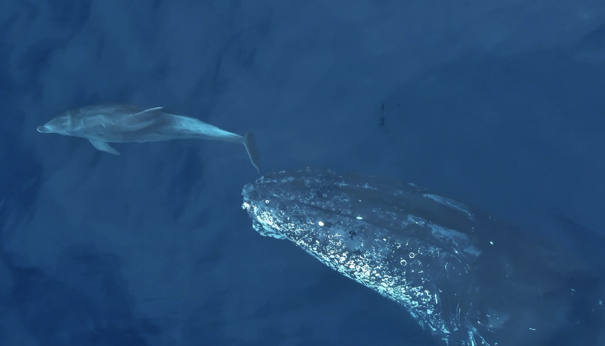
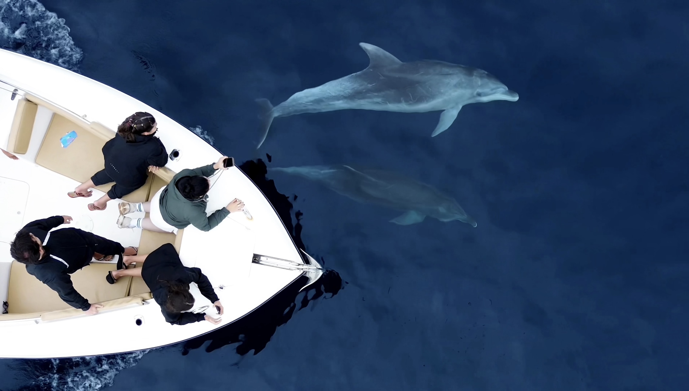

Viva, entenda
e proteja a natureza.
The Ocean Safari é uma expedição de observação ética da vida marinha, guiada por um biólogo e instrutor de mergulho. Não é um roteiro turístico, é uma tentativa real de viver e aprender sobre a natureza na prática.
Amor real pela natureza.
O The Ocean Safari nasceu do trabalho de Daniel Munhoz, biólogo, instrutor de mergulho e documentarista. Criador do @thecrazybiology, um dos maiores perfis de educação ambiental do Brasil, Daniel acumula centenas de mergulhos e expedições ao redor do planeta, sempre com o mesmo propósito: aproximar as pessoas do oceano através da ciência, da experiência e do contato real com a vida selvagem.
Cada expedição segue uma navegação livre, sem roteiro fixo. Vamos ao mar para explorar, observar e buscar encontros naturais com a vida marinha de Ilhabela, sempre respeitando os animais, seus comportamentos e o ambiente.
O que a gente encontra vira notícia
Os registros das nossas expedições em Ilhabela já foram destaque em veículos de alcance nacional.
Escolha sua expedição
Duas embarcações, a mesma logística. A diferença entre as linhas está no barco, não na experiência: a expedição, o roteiro livre e a curadoria do biólogo são os mesmos.
The Ocean SafariSignature
Guiado por Daniel Munhoz, criador do @thecrazybiology. Grupos menores, embarcação premium.
Em Ilhabela o ano todo. No verão, também em Alcatrazes.
The Ocean SafariExplorer
Guiado por biólogo e instrutor de mergulho da equipe @thecrazybiology. Grupos maiores, embarcação de aventura.
The Ocean SafariAlcatrazes
Alcatrazes é uma reserva federal do ICMBio. O acesso é restrito e só acontece com condutor credenciado. Daniel Munhoz é credenciado, e neste verão leva a expedição até lá.
O safari começa antes de chegar. Na ida e na volta seguimos procurando vida marinha. 6h de expedição com mergulho livre, grupos menores, na mesma embarcação da linha Signature.
As datas dependem da autorização do ICMBio e são divulgadas assim que confirmadas. Entre na lista de espera para ser avisado primeiro.
Entrar na lista de espera
The Ocean SafariSignature
Embarque antes dos grupos comerciais e explore as partes mais selvagens de Ilhabela, buscando encontrar e aprender sobre os animais que passam ou vivem no nosso quintal.
Saída em alto mar
- Navegação livre, sem roteiro fixo, guiada por Daniel Munhoz, criador do @thecrazybiology
- Mergulho livre guiado, opcional, com espécies não cetáceas*
- Drone a bordo para procurar e registrar os animais*
- Máscara, snorkel, snacks e bebidas sem álcool inclusos
- Abordagem ética e educativa, sempre priorizando o bem-estar animal
*Diferenciais sujeitos às condições climáticas do dia.
Reservar minha vagaThe Ocean SafariExplorer
Embarque com a equipe @thecrazybiology a bordo de uma embarcação de aventura e explore as partes mais selvagens de Ilhabela em grupo um pouco maior, buscando encontrar e aprender sobre os animais que passam ou vivem no nosso quintal.
Saída em alto mar
- Navegação livre, sem roteiro fixo, guiada por biólogo e instrutor de mergulho da equipe @thecrazybiology
- Mergulho livre guiado, opcional, com espécies não cetáceas*
- Máscara, snorkel, snacks e bebidas sem álcool inclusos
- Abordagem ética e educativa, sempre priorizando o bem-estar animal
*Diferenciais sujeitos às condições climáticas do dia.
Reservar minha vagaUm mar, dois barcos, o mesmo encontro
Para proteger o bem-estar dos animais e manter a qualidade científica de cada encontro, limitamos o número de embarcações presentes em cada avistamento.

Quem vive nessas águas
Muitas espécies são imprevisíveis e podem aparecer em qualquer dia, em qualquer época do ano, mas estas são as janelas de maior chance de encontro.
Mais oceânico, associado a ilhas e canais mais fundos. Documentado no litoral norte de SP e em Ilhabela.
Registrado por pesquisadores em expedições no observatório de Ilhabela, em águas costeiras e mais abertas.
O menor golfinho do Brasil e o mais ameaçado de extinção. Muito discreta, já foi flagrada em grupos familiares em Ilhabela.
Diferente da jubarte, tem registros ao longo de todo o ano no litoral norte, ficando mais costeira no verão.
Nos costões e ilhas em volta de Ilhabela, a vida marinha é constante durante mergulhos e snorkel, em qualquer época do ano.

Como funciona
Reserva
Você garante sua vaga com pagamento antecipado. Grupos de até 10 pessoas, saídas privativas sob consulta.
Embarque
Encontro às 6h em São Sebastião ou Ilhabela. Vista-se para o frio: as manhãs no mar podem ser geladas.
Mar aberto
Navegação livre, sem roteiro fixo, em busca dos encontros mais éticos com a fauna. Para quem quiser entrar na água, mergulho livre guiado quando as condições permitem.
Retorno
De volta às 12h, muitas vezes com uma parada em praia preservada. Seis horas de aventura real.

Para quem é esta expedição
Buscamos participantes com espírito de aventura de verdade.
Navegamos para mar aberto, onde as condições nem sempre são confortáveis. Você vai se molhar, pegar vento forte, e enfrentar balanço constante durante boa parte das seis horas. O risco de enjoo é alto e o impacto da navegação é real.
Da lente ao mar
Imagens feitas em expedições reais do The Ocean Safari, sem estúdio, sem encenação.
Depoimentos
"Ver uma baleia-jubarte de perto estava entre os meus grandes sonhos. Poder não só vê-la, mas também ouvi-la, foi uma emoção indescritível."Participante · The Ocean Safari
"É nítido o quanto o Daniel ama e vive isso. O respeito pelos animais, o cuidado e a forma como fala sobre a vida marinha são sensacionais."Participante · The Ocean Safari
"Não temos nem palavras para descrever a experiência. Surreal. A dedicação e o amor pelo que fazem faz toda a diferença."Participante · The Ocean Safari
"Foi um dia memorável. Muita gratidão por ele ter compartilhado seu conhecimento com tanto carinho."Participante · The Ocean Safari
Perguntas comuns
Não. A atividade principal do Safari é o avistamento embarcado, mergulho livre é opcional.
A atividade é permitida para participantes acima de 12 anos e não é indicada para gestantes. Pessoas com problemas de coluna devem entrar em contato antes da reserva, devido ao impacto da navegação.
Máscara e snorkel de mergulho, snacks e bebidas sem álcool, acompanhamento de biólogo durante toda a expedição e imagens de drone, quando as condições de mar e vento permitem.
Não, e desconfie de quem promete isso. A natureza é imprevisível: algumas espécies são residentes e avistadas com frequência, outras são ocasionais ou sazonais. Navegamos livremente, sem roteiro fixo, exatamente para maximizar a chance de um encontro real e ético, mas nenhum avistamento é garantido.
A decisão de cancelar por segurança é sempre nossa, com base em previsão oficial e orientação da Capitania dos Portos. Nesse caso você tem reembolso integral ou remarcação sem custo. Chuva leve ou mar levemente agitado, dentro dos parâmetros normais, não cancela o passeio.
Sim, equipamento próprio de mergulho livre é bem-vindo. Recomendamos também trazer toalha e roupa seca, água própria e roupas que suportem frio e chuva pela manhã.
Sua próxima saída
começa aqui.
Vagas limitadas a 10 participantes por saída. Passeios privativos disponíveis sob consulta de data e embarcação.
Saída 06h00 · retorno 12h00
Embarque em São Sebastião ou Ilhabela
Escolha entre as linhas Signature e Explorer na hora de reservar.
Reservar minha vaga